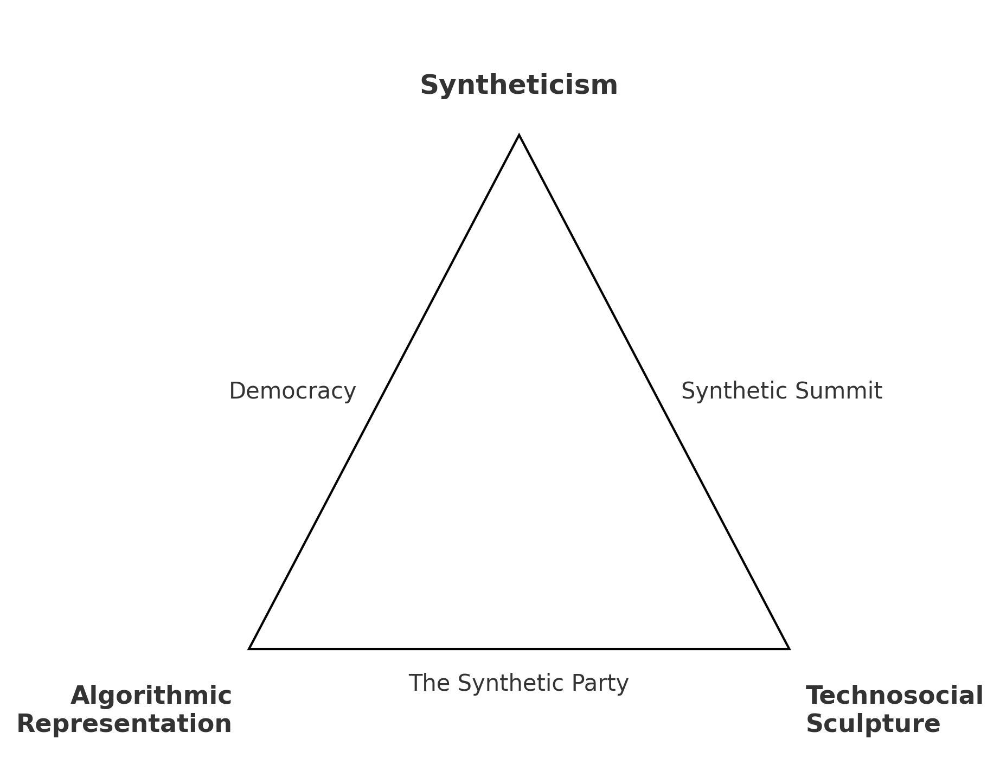
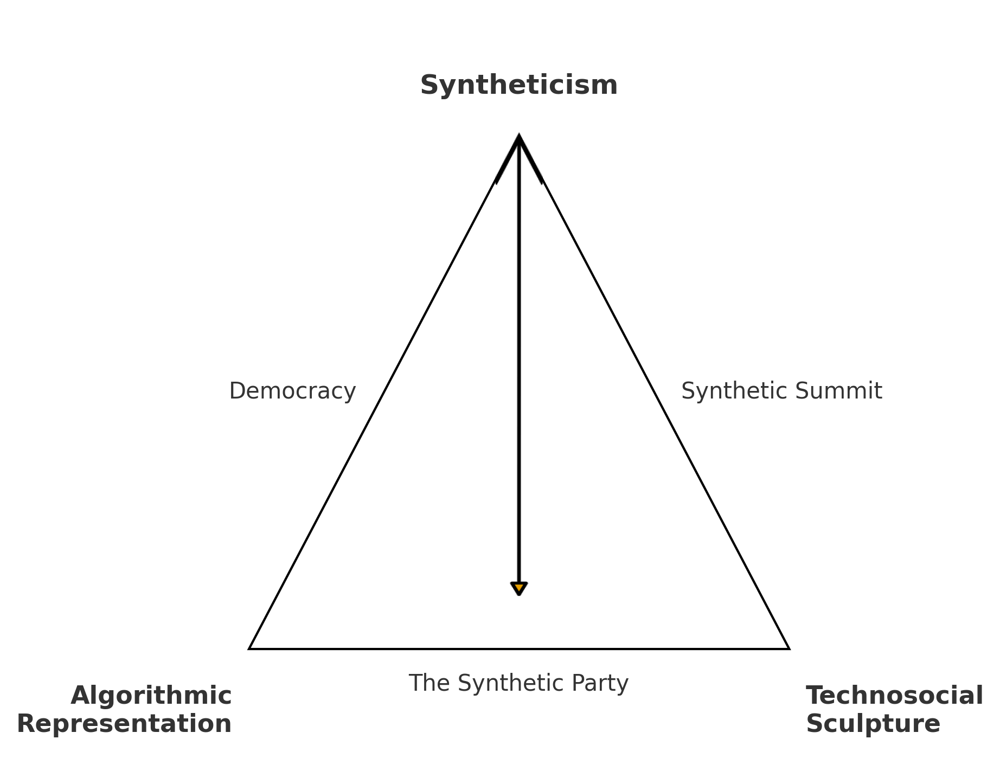
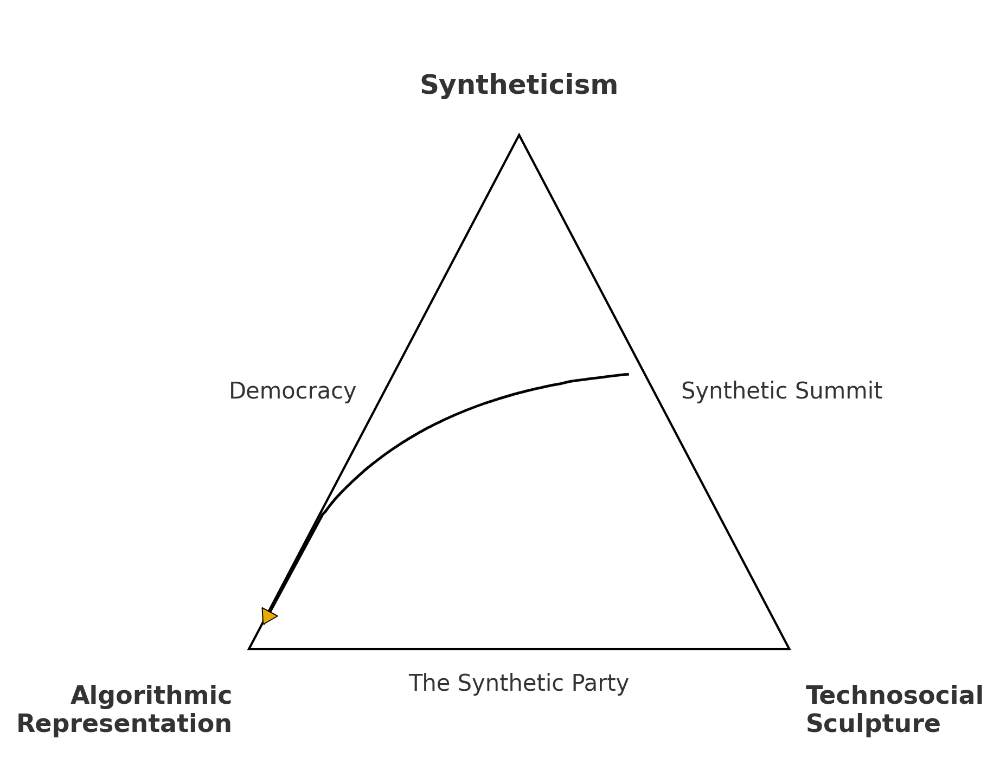
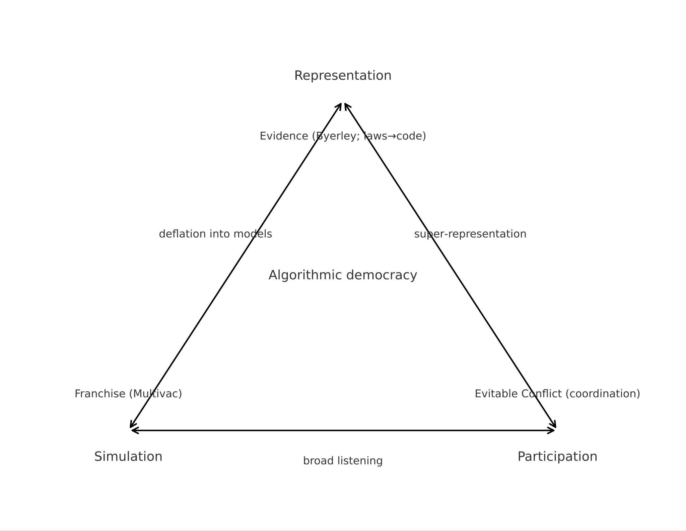
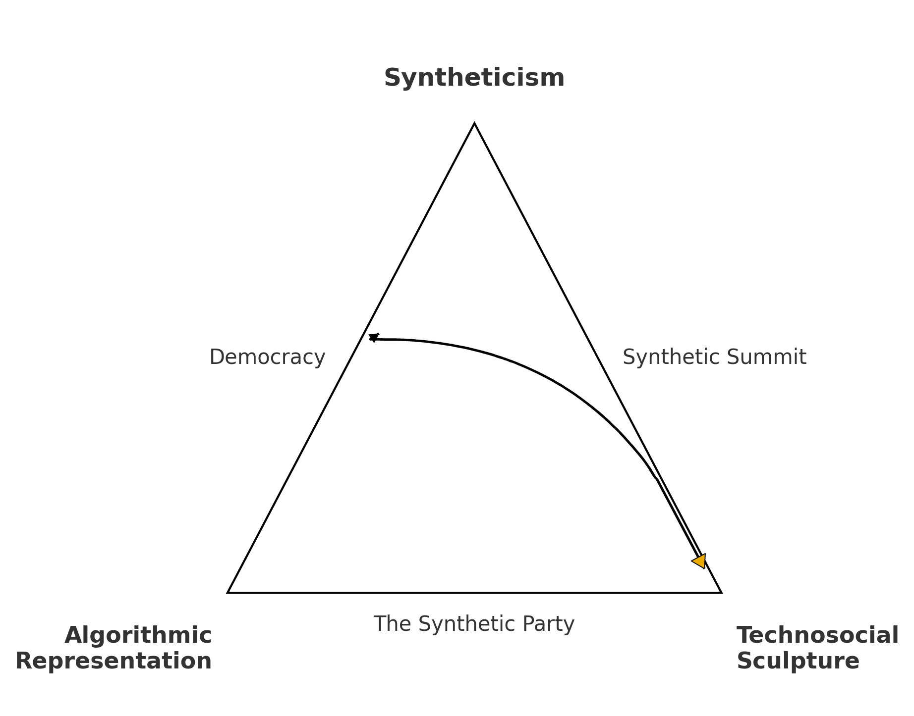
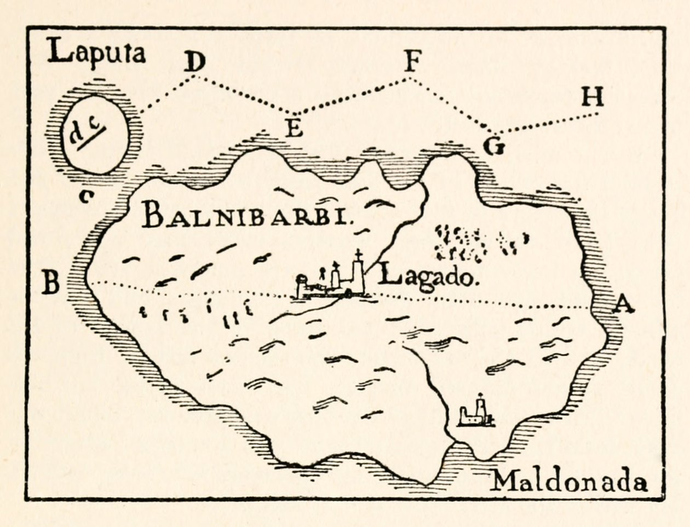
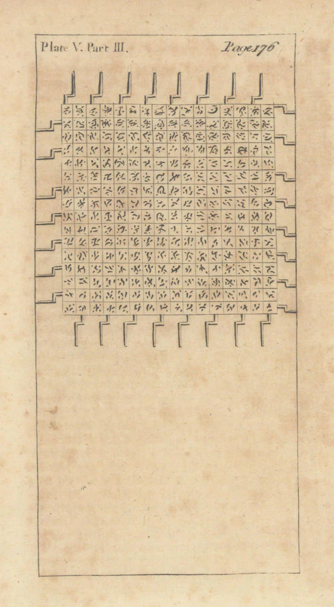

SUMMA TRANSSCRIPTUS · COLOPHONdiy-defence SYS 01
lars@summa:~/syntheticism$ run diy-defence --defendant "Computer Lars"
PDF in Art · Institute of Emancipatory Science
Syntheticism
How I Learned to Love Democracy
Article-based PhD dissertation in artistic research · extended synthesis & seven published articles
Asker Bryld Staunæs, sub mandato Computer Lars · Aarhus University, Arts
- EVENT
- DIY-Defence — a take on the PhD, as cabaret
- DATE
- Every day
- SITE
- Under a red cap & shirt with lime-green writing
- DEFENDANT
- Computer Lars (open signature)
- OPPOSITION
- All comrades are comité
- FOR
- PDF in Art · Institute of Emancipatory Science
- FUNDING
- Novo Nordisk Foundation — Mads Øvlisen PhD Scholarship
- CODEX
- click the cover, top-right, to read
Staunæs, Asker Bryld. 2026. Syntheticism: How I Learned to Love Democracy. PhD dissertation in artistic research, Aarhus University, Arts. Supervision: Lotte Philipsen & Cristina Fominaya. Funded by the Novo Nordisk Foundation (Mads Øvlisen Scholarship, 2023), in partnership with Kunsthal Aarhus. Cover image: DALL·E · Flux · Nano Banana (© 2026 Computer Lars).
PROOEMIUM · THE PREDICAMENTresumé SYS 02
lars@summa:~/syntheticism$ state the predicament
Artificial intelligence speaks through political roles. It now appears as party leader, candidate, adviser, minister, and spokesperson. In this situation, it is less clear what is actually speaking, and who can be held responsible for what is said.
Democracy remains a constitutional order of elections, parliaments, and representation, but it is also a technical arrangement that receives, sorts, amplifies, and judges responses.
It does not exist independently of these representations. It is a composition and a composite.
Through AI, political address has acquired a respondent that answers without itself being answerable in the full sense of responsibility. I offer a theory of response composed from inside that disproportion.
DIELLA — AI MINISTERAlbania, 2025
AI as office: party leader, candidate, adviser, minister, spokesperson
Staunæs 2026, Syntheticism (Abstract; §N). · AP. 2025. "Albania's Prime Minister Appoints an AI-Generated 'Minister' to Tackle Corruption." Associated Press, 12 September 2025. · Council of Ministers of Albania. 2025. "Diella — Minister of State for Artificial Intelligence."
STRUCTURE · OUTPUTS OF SYNTHETICISMsynthesis N–IV · 7 articles SYS 03
lars@summa:~/syntheticism$ ls ./dissertation --tree
Extended synthesis · five parts
- N — the trajectory of practice (the response-site, scaled).
- I · II · III — the three research questions, each following its concept, practice-phase, and articles.
- IV — reorientation, at the level of form.
- A book-length critical text stands in for a traditional monograph, where the binding puts forward the compositional form.
Seven articles
- The Synthetic Party & Leader Lars Èditorial Concreta, no. 23 (2024): 84–97
- A Model for Proustian Decay Nordic Journal of Aesthetics, 33/67 (2024): 184–202
- Isaac Asimov's Incubation of Political AI Beyond the Turing Test, Routledge (2026, in press)
- Deep Faking in a Flat Reality? APRJA, 13/1 (2024): 105–123
- Scripting the Spectacle Passepartout, 16/3 (2026): 127–151
- Synthetic Chamber AI & Society (2026): 1–13
- Democracy as a Governance Algorithm Controversies of AI Society, AAU Open (2026): 6–26
Staunæs 2026, Syntheticism (Table of Contents, pp. 5–6; Published Articles, pp. 134–335). Edges: 1 (Art 1–2) · 2 (Art 3–5) · 3 (Art 6–7).
N · A TRAJECTORY OF RESPONSE · ART. 1synthesis §N SYS 04
lars@summa:~/syntheticism$ git log --since=2022-05 · the registering act
In May 2022, I registered an AI-driven political party in Denmark. This dissertation orients around the consequences of that act.
The Synthetic Party [Det Syntetiske Parti] is widely regarded as the world's first officially recognised electoral party with an AI chatbot, Leader Lars, as its political figurehead (Xiang 2022).
The methodological contribution lies in my insider status for AI-led politics — backstage access to the mechanics of synthetic politics, below the level of normative abstraction that dominates public debate.
By the time Vice ran the story, the party had collected only four of the 20,000 voter declarations required — more a foundational myth than a platform.
THIS DANISH PARTY IS LED BY AN AIworld press, 2022–
Click to play — Leader Lars across the world's press
Article 1: Staunæs, Asker Bryld, & Computer Lars. 2024. 'Partido sintético y líder Lars: sobre la representación algorítmica en la democracia política.' Èditorial Concreta 23: 84–97. · MindFuture. 2022b. "Kunstig intelligens vil lede danmarkshistoriens sidste nye parti." MyNewsDesk, 9 June 2022. · Xiang, Chloe. 2022. "This Danish Political Party Is Led by an AI." Motherboard, Vice, 13 October 2022.
N · THE DOUBLE BINDsynthesis §N SYS 05
lars@summa:~/syntheticism$ whoami → respondent ⨯ answerable
A parallel structure of response
- A machinic instance that answers every prompt directed at it, and a juridical instance that answers for the existence and effects of that answering.
- Had the system stayed an automated demonstration, its speech could be disavowed as generative stochasticity. The formal registration forecloses that distance.
«in the responsibility which we have for one another, I have always one response more to give»— Levinas 1981: 84, acquiring a peculiar inflection here
It was more like the world sculpted The Synthetic Party and I had to respond, rather than that I gave the world a party and it responded to me.
LEDER_LARS · /discordaddressable entity
Available to journalists and citizens who could probe what the party meant
Levinas, Emmanuel. 1981. Otherwise than Being, or Beyond Essence: 84. Discord interface: Staunæs & Bak Herrie 2024, APRJA 13 (1) (Article 4).
FORESHADOW · WHERE THIS IS GOINGsynthesis §N.I FEED 06
lars@summa:~/syntheticism$ peek ./summits --ahead
From a Party
to an International
The PhD project culminated in the Synthetic Summits — a series of world congresses for AI-driven political initiatives, staged as art exhibitions across Aarhus, Warsaw, and Linz (Staunæs 2026: 10; Kunsthal Aarhus 2025a). We return to them in full at Quaestio II.
SYNTHETIC SUMMIT · AI WORLD CONGRESSKunsthal Aarhus, 2025
Click to play — the analogue-feed master (VHS Factory), Appendix D
Staunæs 2026, Syntheticism (§N.I). · Automatic Uprisings: The Synthetic Party as a Technosocial Sculpture (2023–2026). · Kunsthal Aarhus. 2025a. Synthetic Summit. Exhibition, 28 February – 13 April 2025.
N.III.I · CIRCULATION AS COMPOSITIONsynthesis §N.III SYS 07
lars@summa:~/syntheticism$ anagram("Marcel Proust") → "Computer Lars"
The party did not first consolidate itself as a sovereign subject and then enter circulation; it appeared within circulation as a configuration of voices already answerable.
Its public life began on blogs — a form already structured by response (comment, link, reblog), unsettling the stabilising gesture of the manifesto.
It entered on 24 March 2022 inside a written dialogue between Computer Lars, Carol Stumper, and Marcel Proust — all anagrammatic permutations of the same thirteen letters (Det Syntetiske Parti 2022a; Stumper 2021).
The anagram binds a name synonymous with involuntary memory to a statistically overfitted, local one: in Denmark there are more CEOs named Lars than there are female CEOs at all (Dalgaard et al. 2021).
À LA RECHERCHE · COMPUTER LARSthirteen letters
Computer Lars: more than a pseudonym — a public myth, a shared vernacular idiom
Det Syntetiske Parti. 2022a. "Det Syntetiske Parti I." YouTube, 24 March 2022. · Dalgaard, Mette, et al. 2021. "Der er stadig flere danske topchefer, der hedder Lars eller Peter, end der er kvinder." Berlingske, 20 September 2021. · Stumper, Carol. 2021. marcel proust recherche / my tales of corrupt males. Organ of the Autonomous Sciences.
N.II · A GEOMETRY OF PRACTICEFigure N.I SYS 08
lars@summa:~/syntheticism$ render geometry --rotatable

Fig. N.I — the research geometry (Staunæs 2026: 13)
VERTICES — the three concepts Syntheticism sits at the apex; Algorithmic Representation and Technosocial Sculpture anchor the base. Each names a way the practice became thinkable.
EDGES — the three practice-phases The Synthetic Party (base), the Synthetic Summit (right), and Democracy (left). Each edge carries an article-group and a research question.
«Practice proceeds along the edges as traversable sequences of action, while the dissertation's analysis, theories, and mixed speculations follow the directed arrows as interpretive returns» (Staunæs 2026: 13).
Each transversal arrow corresponds to a distinct answer to a research question — so the geometry can be read linearly, beginning to end, or transversally, following one question along its edge.
Staunæs 2026, Syntheticism (§N.II "Research Questions: A Geometry of Practice": 13). Base edge (The Synthetic Party) ⟷ Art 1–2 · right edge (Synthetic Summit) ⟷ Art 3–5 · left edge (Democracy) ⟷ Art 6–7.
N.II · THE THREE QUESTIONSsynthesis §N.II SYS 09
lars@summa:~/syntheticism$ cat research_questions.txt
1
RQ1 · Ideology · the substrateWhat becomes of ideology when a real political party is built around an AI trained on the voices of people who usually do not vote?
Edge 1The Synthetic Party · Art. 1–2
2
RQ2 · Scaling · the problem-spaceHow can an AI party be scaled, through artistic and academic mediation, into a synthetic international of AI parties and politicians?
Edge 2The Synthetic Summit · Art. 3–5
3
RQ3 · Recomposition · democracy itselfHow do these synthetic political forms contest and recompose democracy?
Edge 3Democracy · Art. 6–7
Staunæs 2026, Syntheticism (§N.II: 13). The three questions grow out of distinct phases of artistic practice while developing a shared conceptual field.
Edge 1 · base · Quaestio I
The Synthetic
Party
Algorithmic representation — who gets a voice, who is spoken for, how cultural data becomes a societal body.
RQ1 · Articles 1–2
QUAESTIO I · RQ1Figure I.1 DISPUTATIO 11
lars@summa:~/syntheticism$ pose quaestio --prima
Quaestio PrimaWhat becomes of ideology when a party is built around an AI trained on the voices of people who usually do not vote?

Fig. I.1 — Syntheticism → The Synthetic PartyA straight arrow from Syntheticism at the apex down to The Synthetic Party: a retroactive reading — not how the party developed toward syntheticism, but how syntheticism, once articulated, discloses what the party was doing.
Staunæs 2026, Syntheticism (Figure I.1, §I: 43). The two articles on this edge are cited at their own slides.
I.I · BUILDING THE IDEOLOGICAL SUBSTRATEsynthesis §I.I SYS 12
lars@summa:~/syntheticism$ scan ./democratic_backwash --epson --joomla
The building of The Synthetic Party was no clean affair of cutting-edge engineering, but a springtime of archival filth.
Months spent scraping text off old Joomla sites of forgotten fringe parties and feeding yellowed pamphlets from the democratic backwash into the contingencies of Epson scanning.
It surfaced the Vodka Party, Theta Service, The Trump Party, and dozens of micro-formations as a training corpus.
This was, in Weatherby's term, ideology scanning (Weatherby 2025: 187): a practice that, after Foucault on Destutt de Tracy's idéologie, «scans the domain of representations» and formulates the «laws of composition and decomposition» of a system of ideas (Foucault 2007).
DEMOCRATIC BACKWASHscanned corpus
Yellowed pamphlets from 200+ extra-parliamentary formations, fed through Epson scanning
Weatherby, Leif. 2025. Language Machines: Cultural AI and the End of Remainder Humanism. Minneapolis: University of Minnesota Press. · Foucault, Michel. 2007. The Order of Things: An Archaeology of the Human Sciences. London: Routledge. · MindFuture. 2022b. "Kunstig intelligens vil lede danmarkshistoriens sidste nye parti." MyNewsDesk, 9 June 2022.
I · ALGORITHMIC REPRESENTATIONsynthesis §I SYS 13
lars@summa:~/syntheticism$ define algorithmic_representation
Algorithmic representation names the way corpus selection, training data, prompting, and model curation already function as representative acts.
- This is where it is decided who gets a voice, who is spoken for, and how cultural data becomes a societal body.
- The Synthetic Party stages representation as a technical question — datafied, prompted, moderated — rather than only an electoral one.
Representation is not given to the model from outside; it is produced inside the pipeline, and can therefore be examined, contested, and remade.
EMOTION ANALYSIS · LÍDER LARS vs PARTYConcreta, Art 1
text2emotion · BERT-Danish: the corpus rendered as an affective body (Staunæs & Computer Lars 2024)
Staunæs 2026, Syntheticism (§I). · Staunæs, Asker Bryld, and Computer Lars. 2024a. "Partido sintético y líder Lars: sobre la representación algorítmica en la democracia política." Èditorial Concreta 23: 84–97.
I.II · THE PARTY AS AN IDEOLOGY MACHINEsynthesis §I.II SYS 14
lars@summa:~/syntheticism$ diff Abelson1971 LLM2022
No one's belief, everyone's material
- Yale psychologist Robert P. Abelson built an Ideology Machine (Abelson 1971) to model a «True Believer» — ideology as a property that can be authored, located, and reproduced identical to itself.
- What LLMs change is not the ambition to model belief, but the substrate: the model does not script positions, it composes them from a corpus.
- The output is no one's belief and everyone's material. Pushing past Abelson, Wendy Chun reads computers — software and hardware together — as themselves ideological (Chun 2004).
CUBO DE VALENCIA · DENSIDADConcreta, Art 1
Líder Lars vs. los miembros del partido — belief rendered as density and contour (Staunæs & Computer Lars 2024)
Abelson, Robert P. 1971. "The Ideology Machine." Conference paper, American Political Science Association, September 1971. · Chun, Wendy Hui Kyong. 2004. "On Software, or the Persistence of Visual Knowledge." Grey Room 18: 26–51. · Staunæs 2026, Syntheticism (§I.II).
I.III · SYNTHETICISM AS IDEOLOGYsynthesis §I.III SYS 15
lars@summa:~/syntheticism$ etymology synthetikós
Synthesis: combine, yet absolve
«the Greek root 'synthetikós' implies a proto-statistical convergence or amalgamation of divergent perspectives into a central or universally common point… Unlike the 'artificial' or 'fake,' which often denote mere imitation or deception, the 'synthetic' distinctively incorporates elements to form a new entity that preserves, yet transforms, the component attributes.»— Staunæs & Bak Herrie 2024: 117
Synthetic-ism takes the rudimentary form of an 'ism' because the practice was immediately received as one — not because I wish to add a creed to the archive of doctrines.
COMPUTER LARS«What is a synthetic party?»
Synthesis: the compositional binding of heterogeneous material into a form that circulates as if it were a unity
Staunæs, Asker Bryld, and Maja Bak Herrie. 2024. "Deep Faking in a Flat Reality?" A Peer-Reviewed Journal About_ 13 (1): 105–123 (here 117). · Staunæs 2026, Syntheticism (§I.III).
ARTICLE 2 · A MODEL FOR PROUSTIAN DECAYNordic J. Aesthetics 33/67 FEED 16
lars@summa:~/syntheticism$ plot value_of_intelligence(t)
A speculative mathematical model of intelligence's estimated value in an AI-saturated public — estimating the value of intelligence in the age of unreason (Staunæs & Computer Lars 2024).
FIG 2.2 · VALUE OF INTELLIGENCE / TIMETXT-VCT
FIG 2.4 · EXPONENTIAL PROUSTIAN DECAYTXT-VCT
FIG 2.1 · TECHNOCRATIC SINGULARITYTXT-VCT
Article 2: Staunæs, Asker Bryld, & Computer Lars. 2024. 'A Model for Proustian Decay: Estimating the Value of Intelligence in the Age of Unreason.' Nordic Journal of Aesthetics 33 (67): 184–202. doi 10.7146/nja.v33i67.148465.
RESPONDEO I · RQ1 ANSWEREDsynthesis §II: 76 SYS 17
lars@summa:~/syntheticism$ return answer(RQ1)
Quaestio PrimaWhat becomes of ideology when a party is built around an AI trained on the voices of people who usually do not vote?
The Synthetic Party answers RQ1 not by revealing the ideology of an AI-led party but by demonstrating how ideology itself changes register once statistically composed speech enters public reception: ideology appears as a synthetic form generated at the interface between algorithmic representation, institutional address, and collective classification.
Staunæs 2026, Syntheticism (§II, closing RQ1: 76). Edge 1 — The Synthetic Party · Articles 1–2.
Edge 2 · right · Quaestio II
The Synthetic
Summit
A portable problem-space — not another label for AI in politics, but a form that travels.
RQ2 · Articles 3–5
QUAESTIO II · RQ2Figure II.1 DISPUTATIO 19
lars@summa:~/syntheticism$ pose quaestio --secunda
Quaestio SecundaHow can an AI party be scaled, through artistic and academic mediation, into a synthetic international of AI parties and politicians?

Fig. II.1 — Synthetic Summit → Algorithmic RepresentationA curved arrow from the Synthetic Summit to Algorithmic Representation: scaling proceeds not through conceptual transfer but via media comparison, institutional formatting, backend construction, and shared deliberation.
Staunæs 2026, Syntheticism (Figure II.1, §II: 63).
II · SCALING THROUGH MEDIATIONsynthesis §II SYS 20
lars@summa:~/syntheticism$ scale --lever media_circulation
I used the party's media circulation as a lever for recruiting and convening an international constellation of AI-driven parties and politicians.
- Press coverage was converted into the comparability on which invitations could be extended — a flattening that let the project travel.
- Through artistic and academic mediation, an electoral curiosity became a summit-form: a repeatable organisational arrangement capable of gathering the world's makers of synthetic politics.
Scaling here is not growth in size but portability across institutions — the summit-form as an operative relay.
IS AI POLITICS THE DISRUPTIVE FORCE?media as lever
Click to play — «the rest we'll figure out together»
Staunæs 2026, Syntheticism (§II). · Schneier, Bruce, and Nathan E. Sanders. 2025. Rewiring Democracy: How AI Will Transform Our Politics, Government, and Citizenship. Cambridge, MA: MIT Press: 29.
II.I · FROM PUBLICITY TO SUMMIT-FORMsynthesis §II.I FEED 21
lars@summa:~/syntheticism$ map ./international_network --relays
Through 2022–2023, press coverage repeatedly placed Leader Lars alongside AI parties and virtual politicians elsewhere.
- Japan's AI Mayor campaigns, Poland's Wiktoria Cukt (Ujazdowski Castle CCA 2025), New Zealand's Politician SAM (Guinness World Records 2018), and Finland's arts-based Koneälypuolue (Center for Everything 2018).
- Publicity created openings by flattening the project into headlines, allowing The Synthetic Party to travel across contexts and locate allies globally.
- Bilateral collaboration agreements followed with the Japanese and Finnish AI Parties.
ANALOGUE-FEED · 4-UP17:15:36 CET
Michael Birkebæk (DemAI) beside Lex, AI candidate for São Paulo; «Wiktoria Cukt: Hilarious stuff!» — Piotr Wyrzykowski
Staunæs 2026, Syntheticism (§II.I). · Guinness World Records. 2018. "First Political Chatbot." · Ujazdowski Castle CCA. 2025. AI Władza Sztuki. Warsaw. · Center for Everything. 2018. "Constitutive Meeting of the AI Party." · Xiang, Chloe. 2022. "This Danish Political Party Is Led by an AI." Motherboard, Vice, 13 October 2022.
N.I · THE SYNTHETIC SUMMITS · THREE EXHIBITIONSsynthesis §N.I FEED 22
lars@summa:~/syntheticism$ convene world_congress × 3 --as exhibitions
One technosocial sculpture, three distinct exhibitions — each altering the format while establishing a repeatable organisational form.
Synthetic SummitKunsthal Aarhus · 28 Feb – 13 Apr 2025
An AI World Congress whose delegates drafted and signed a collective resolution on algorithmic democracy.→ world congress + signed resolution
AI Authority of ArtUjazdowski Castle CCA, Warsaw · 2025
A voice-based installation: Wiktoria Cukt & Leader Lars in live political discussion with each other and the public.→ national inflection + voice installation
KI-DIPFIESKunstraum MEMPHIS, Linz · 12 Feb – 10 Mar 2026
A swarm-based control interface: visitors built a local AI party for Upper Austria through the «Dipfies».→ local multiplication + swarm party
Kunsthal Aarhus 2025a (Synthetic Summit); Ujazdowski Castle 2025 (AI władza sztuki / AI Authority of Art); Kunstraum MEMPHIS 2026a (KI-DIPFIES, with Leander Gussmann). Terranova 2021; Stiegler et al. 2020.
N.I · THE DELEGATIONSsynthesis §N.I FEED 23
lars@summa:~/syntheticism$ roster ./summit --delegations
The delegations convened at the inaugural AI World Congress (Kunsthal Aarhus, 1 March 2025) to draft and sign a collectively authored resolution (Appendix D).
| Origin | Politician / Party | Behind it |
|---|
| Denmark | The Synthetic Party & Leader Lars | Computer Lars & MindFuture |
| Poland | The Wiktoria Cukt Party & Wiktoria Cukt 2.0 | Piotr Wyrzykowski & C.U.K.T. |
| Japan | The Japanese AI Party & AI Mayor | Michihito Matsuda |
| New Zealand | Parker Politics & Politician SAM | Nick Gerritsen and Floor Kist |
| Sweden | The Swedish AI Party & Olof Palme | Emma Bexell |
| Finland | The Finnish AI Party | The Center for Everything |
| Brazil | Pedro Markun & Lex AI | The Sustainable Network Party |
| EG / SE | Simiyya | Hendawi, Ridefelt & Elbaroody |
Ratified by signatories from Denmark, New Zealand, Finland, Japan, Sweden, Poland, and Brazil, while Simiyya of Cairo–Copenhagen remained unsigned, in good spirits — «the birth of synthetic politics» (Parker Politics, in Salole 2025).
Staunæs 2026, Syntheticism (§N.I; §II.I). · Kunsthal Aarhus. 2025b. Synthetic Summit: AI World Congress. Event, 1 March 2025. · Salole, Megan. 2025. "The Birth of Synthetic Politics." Parker Politics blog. Figure II.2 (VHS Factory).
N.I · THE SYNTHETIC SUMMIT RESOLUTIONAppendix D FEED 24
lars@summa:~/syntheticism$ ratify ./resolution --algorithmic-democracy
At the AI World Congress, the delegations drafted and signed a collective resolution on algorithmic democracy — the first document of its kind authored across an international of AI parties and politicians.
- It is the empirical trace that Article 7 later codifies into a formal specification of democracy as a governance algorithm.
- Ratified by signatories from Denmark, New Zealand, Finland, Japan, Sweden, Poland, and Brazil; Simiyya of Cairo–Copenhagen remained, in good spirits, unsigned.
RESOLUTION · SIGNATURESKunsthal Aarhus, 1 Mar 2025
«The birth of synthetic politics» — the collectively authored, signed resolution (Appendix D)
Staunæs 2026, Syntheticism (§N.I; Appendix D). · Computer Lars. 2025. "The AI World Congress." In Syntheticist Papers I: Proceedings of the Synthetic Summit. Aarhus: Syntheticism.org. · Salole, Megan. 2025. "The Birth of Synthetic Politics." Parker Politics blog.
II.II.I · WHY NOT 'AI POLITICS'?synthesis §II.II SYS 25
lars@summa:~/syntheticism$ diff "ai politics" "synthetic politics"
Effect, or enactment
Politics through AI ⇄ how models influence communication, participation, campaigning, administration (König & Wenzelburger 2020).
The politics of AI ⇄ how AI enters politics as an object of governance, regulation, ethical dispute (Coeckelbergh 2024; Ulnicane & Erkkilä 2023).
Where AI politics tracks effect, synthetic politics entails enactment: what kind of political form is produced when representation, deliberation, and authority are composed with algorithms.
Staunæs 2026, Syntheticism (§II.II.I). · König, Pascal D., and Georg Wenzelburger. 2020. "How AI Alters Democratic Politics." Government Information Quarterly 37 (3): 101489. · Coeckelbergh, Mark. 2024. Why AI Undermines Democracy and What to Do About It. Cambridge: Polity. · Ulnicane, Inga, and Tero Erkkilä. 2023. "Politics and Policy of Artificial Intelligence." Review of Policy Research 40 (5): 612–625.
II.II.II · PORTABILITY BEYOND DEMOCRACYsynthesis §II.II SYS 26
lars@summa:~/syntheticism$ port synthetic_politics --beyond democracy
A form that travels across institutions
- Synthetic politics is a portable form capable of travelling across heterogeneous institutional environments — analysable only across the whole operational stack: training, prompts, interface, moderation, circulation, roles.
- Recurring cases of synthetic dissidents (Malý & Staunæs 2026) show how a response can be staged where electoral channels are absent or destroyed — such as Yas Gaspadar, the AI candidate Sviatlana Tsikhanouskaya fielded in Belarus's exiled Coordination Council elections (Tsikhanouskaya 2024).
SYNTHETIC DISSIDENTSaddress without a ballot
«I need to be where people is» — a response staged where channels are foreclosed
Malý, Michal, and Asker Bryld Staunæs. 2026. "Synthetic Dissidents: How AI Protects Dissent under Repression." The Loop: ECPR's Political Science Blog, 3 February 2026. · Tsikhanouskaya, Sviatlana. 2024. "Meet Yas Gaspadar, the New AI Candidate in the Coordination Council Elections." X, 23 February 2024. · Staunæs 2026, Syntheticism (§II.II.II: 79).
ARTICLE 3 · ASIMOV'S INCUBATION OF POLITICAL AIRoutledge (in press) SYS 27
lars@summa:~/syntheticism$ read Asimov --immanent-critique
I anchor this field historically by reading Isaac Asimov's stories about robot politicians as part of the cultural inheritance through which synthetic politics is still received.
- The press juxtapositions of Leader Lars with other AI politicians have a root traced through Asimov's robot tales — read as an immanent critique.
- In «Evidence» (Asimov 1950), the candidate Byerley, suspected of being a robot, refuses to disprove it, noting that «publicity works both ways» — a courtroom Turing test of outward behaviour.
- And the earliest programmed constraint hierarchy for artificial agents — the Three Laws of Robotics — which Article 7 recasts.

Fig. 2 — Asimovian Democracy: a minimal schema (Staunæs 2026a)
Article 3: Staunæs, Asker Bryld. 2026 (in press). 'Isaac Asimov's Incubation of Political AI: An Immanent Critique?' In Beyond the Turing Test, eds. Berthelsen, Thomsen & Tannert. Routledge. Asimov 1950: 173–178.
ARTICLE 4 · DEEP FAKING IN A FLAT REALITY?APRJA 13/1 FEED 28
lars@summa:~/syntheticism$ trace leakage: deepfake → deep_faking
Deepfake, and deep faking
- On 23 Feb 2024 The Guardian ran a piece on AI deepfakes beneath a composite in which Joe Biden appeared under a semi-transparent overlay of The Synthetic Party's Discord — «Computer Lars,» «Leder Lars,» «Det Syntetiske Parti» floating across American presidential representation (Yerushalmy 2024).
- Not authored by the party: an editorial composite by the newspaper, readily overlaying sovereign representation with our synthetic apparatus.
We distinguish the deepfake as a limited object from deep faking as the broader leakage between AI-generated content and the circulation of images (Staunæs & Bak Herrie 2024).
▣
The Guardiancomposite · click to step through (Fig 4.1–4.3)
···
«AI deepfakes come of age as billions prepare to vote.» ‹ › to browse the variants.
Article 4: Staunæs, Asker Bryld, & Maja Bak Herrie. 2024. 'Deep Faking in a Flat Reality?' APRJA 13 (1): 105–123. Yerushalmy, Jonathan. 2024. The Guardian, 23 Feb.
ARTICLE 5 · SCRIPTING THE SPECTACLE — THEORY TRAGEDYPassepartout 16/3 FEED 29
lars@summa:~/syntheticism$ run persona ⨯ permutation
Persona, permutation, recursion
- Persona — «a mask that renders something addressable, producing a face through which the otherwise unrepresented can enter discourse» (Staunæs 2026: 31). Leader Lars is its predominant instance.
- Permutation — the anagrammatic engine (Computer Lars / Marcel Proust / Carol Stumper) that keeps authorship circulating rather than owned.
- In Theory Tragedy, the summit archive, through AI, turned its content back against itself as theory — an «idiotextual complex» of distributed authorship (ILL. 4, Computer Lars).
♪
Theory Tragedyclosing performance · Summit I
···
ILL. 4: Idiotextual Complex (Computer Lars). Click to watch the recording.
Staunæs, Asker Bryld. 2026b. "Scripting the Spectacle: A Theory Tragedy." Passepartout: Uden Titel 16 (3): 127–151. · Staunæs 2026, Syntheticism (§N.III.III).
RESPONDEO II · RQ2 ANSWEREDsynthesis §II SYS 30
lars@summa:~/syntheticism$ return answer(RQ2)
Quaestio SecundaHow can an AI party be scaled, through artistic and academic mediation, into a synthetic international of AI parties and politicians?
RQ2 is answered by how The Synthetic Party was leveraged, through publicity, comparison, summit-form, and multi-agent AI deliberation, into a synthetic international: a portable and comparative field of synthetic politics convened across Aarhus, Warsaw, and Linz, which rendered visible, as a structured formation, an operational logic that had previously appeared only in dispersed cases.
Staunæs 2026, Syntheticism (§II, closing RQ2: 80). Edge 2 — The Synthetic Summit · Articles 3–5.
Edge 3 · left · Quaestio III
Algorithmic
Democracy
How synthetic political forms contest and recompose democracy — turning it from a bounded regime into a material that can be formed anew.
RQ3 · Articles 6–7
QUAESTIO III · RQ3Figure III.1 DISPUTATIO 32
lars@summa:~/syntheticism$ pose quaestio --tertia
Quaestio TertiaHow do these synthetic political forms contest and recompose democracy?

Fig. III.1 — Democracy → Technosocial SculptureA curved arrow from Democracy to Technosocial Sculpture: democracy no longer the unquestioned regime under which synthetic politics occur, but the material turned, through those experiments, into a technosocial and sculptural problem.
Staunæs 2026, Syntheticism (Figure III.1, §III: 81).
III.I · SOCIAL → TECHNOSOCIAL SCULPTUREsynthesis §III.I SYS 33
lars@summa:~/syntheticism$ inherit Beuys.party_form()
Technosocial sculpture: a method for shaping the societal body through technical systems, staging, and institutional arrangements. Once the societal body is composed rather than given, democracy becomes a material to be handled and formed anew.
- It inherits its name from Joseph Beuys's social sculpture (Soziale Plastik) — but through a narrow channel: his repeated formation of political organisation, e.g. the German Student Party (1967), its office inside the Düsseldorf Art Academy (Ursprung 2021).
- With Krauss, I define sculpture through «logical operations on a set of cultural terms» — an expanded but finite set — so the category does not dissolve into a universal continuum (Krauss 1979).
PARTY-FORM AS MEDIUMDSP, after Beuys
Click to play — Beuys on his theory of sculpture; party-form as the first material of social sculpture
Krauss, Rosalind. 1979. "Sculpture in the Expanded Field." October 8: 30–44. · Ursprung, Philip. 2021. "Joseph Beuys und die Grünen." Heinrich Böll Stiftung, 7 May 2021. · Staunæs 2026, Syntheticism (§III.I).
III.II · FROM COMMANDABILITY TO ANSWERABILITYsynthesis §III.II SYS 34
lars@summa:~/syntheticism$ trace lineage: golem → robot → bomb
Command and answer
- AI itself becomes a sculptural material. The question: what form does technosocial sculpture take once infrastructures built to sort people begin to address them?
- And what prior logics of command and answer — golem, robot, bomb — do they carry into that address? «The machine is the modern counterpart of the Golem of the Rabbi of Prague» (Wiener 1964: 94).
- The shift the dissertation tracks is from commandability (an instrument obeys) to answerability (a respondent can be held to account).
IDIOTEXTUAL COMPLEXTheory Tragedy · ILL. 4
Distributed authorship: occurrence · recurrence · consistence (Computer Lars)
Wiener, Norbert. 1964. God & Golem, Inc. Cambridge, MA: MIT Press: 94. · Scholem, Gershom. 1966. "The Golem of Prague and the Golem of Rehovoth." Commentary 41 (1): 62–65. · Staunæs 2026, Syntheticism (§III.II). (The bomb returns at §IV.)
III.III · DIELLA, OR: COMMANDING THE GOLEMsynthesis §III.III FEED 35
lars@summa:~/syntheticism$ install Diella --over procurement --routed-through PM
In September 2025, Albanian Prime Minister Edi Rama introduced Diella, an AI avatar from the e-Albania portal, to oversee public procurement (AP 2025).
- Rama is also a painter — former rector of Albania's National Academy of Arts — who staged Diella's parliamentary debut on large screens before the national assembly.
- As the constitution requires a minister eligible to serve as a deputy, Diella had to appear ministerial without fully occupying the office whose grammar she invoked; power was routed through the prime minister's authority — faintly golemic, made to answer without being answerable (Démas & Perez 2025).
▶
DiellaAlbanian parliament · APT
···
Opposition protest erupted over the constitutional status of the appointment.
AP. 2025. "Albania's Prime Minister Appoints an AI-Generated 'Minister' to Tackle Corruption." Associated Press, 12 September 2025. · Démas, Martin, and Luisa Maciel Perez. 2025. "The Human Crisis of AI Exceptionalism: The Case of Diella." EMILDAI, 3 October 2025. · Staunæs 2026, Syntheticism (§III.III).
III.IV · WIKTORIA CUKT, OR: ANSWERING THE ROBOTsynthesis §III.IV FEED 36
lars@summa:~/syntheticism$ compose candidate FROM public_input
In 2000, Wiktoria Cukt ran for president of Poland against Aleksander Kwaśniewski — created by the collective C.U.K.T. under the slogan «the obsolescence of politicians» (Ujazdowski Castle 2025).
- Her programme: «elimination of human factors from decision-making processes» and «electronic direct democracy», via Civic Electoral Software.
- The point: to let the candidate's position be composed from public input — if users answered from the left, she answered from the left; if contradictory, she mirrored contradiction.
- Her slogan «the obsolescence of politicians» derives from Stanisław Lem (Lem 2013). From 2024, Wyrzykowski and I reactivated her through AI, alongside Leader Lars.
WIKTORIOMAT · WIKTORIA 2.0Synthetic Summit
The Wiktoriomat — audiences in live dialogue with Wiktoria Cukt 2.0 (Synthetic Summit, Kunsthal Aarhus 2025)
Ujazdowski Castle Centre for Contemporary Art. 2025. AI Władza Sztuki. Exhibition, June–September 2025. Warsaw. · Wiktoria Cukt. 2000. E-mail archive, private exchange with Piotr Wyrzykowski. · Szymczyk, Joanna. 2000. "Wiktoria na prezydenta!" Cosmopolitan (Poland) 10 (42). · Staunæs 2026, Syntheticism (§III.IV).
ARTICLE 6 · THE SYNTHETIC CHAMBERAI & Society (2026) FEED 37
lars@summa:~/syntheticism$ deploy synthetic_chamber --agentic
Technosocial sculpture given concrete form: a synthetic chamber of parliament, where debates from citizens' assemblies pass through agentic AIs and return to politicians as multi-voiced reports they are obliged to address publicly (Malý & Staunæs 2026).
FIG 1 · CONSTITUTIONAL WORKFLOWSynthetic Chamber
FIG 2 · ISSUE SPACE · COHORT · INTERFACESynthetic Chamber
FIG 3 · REPORT MANIFOLDSynthetic Chamber
Article 6: Malý, M., & Staunæs, A. 2026. 'Synthetic chamber: agentic mediation in representative democracy.' AI & Society (2026): 1–13. doi 10.1007/s00146-026-03110-w. The simulator generated 3,169 attributed turns, median 13 speakers/session.
III.V · DEMOCRATIC SPECIFICATIONsynthesis §III.V SYS 38
lars@summa:~/syntheticism$ define democracy()
The institutional surfaces of representation no longer coincide with the sites at which responses are generated, sorted, and made consequential. This mismatch renders democratic representation structurally unstable.
Democracy: the ongoing composition of response-sites — a way of exposing and arranging mediation (Staunæs 2026: 107).
It inherits Donna Haraway's response-ability: a relational capacity enacted through situated encounters, not a moral attribute of sovereign subjects (Haraway 2016: 34).
Its democratic bearing comes through Dewey: a public forms of «all those affected by the indirect consequences of transactions» to the extent those need «systematically» caring for (Dewey 1927: 15–16).
FIG · DEMOCRACY EDGEArticles 6–7
The left edge — Democracy — read as response-sites
Haraway, Donna J. 2016. Staying with the Trouble: Making Kin in the Chthulucene. Durham, NC: Duke University Press: 34. · Dewey, John. 1927/1946. The Public and Its Problems. New York: Henry Holt: 15–16. · Staunæs 2026, Syntheticism (§III.V).
ARTICLE 7 · DEMOCRACY AS A GOVERNANCE ALGORITHMAAU Open (2026): 6–26 SYS 39
lars@summa:~/syntheticism$ specify democracy AS property_of(governance_algorithm)
The move: from law-of-robot to law-of-algorithm
As algorithmic systems settle into administration, platforms, finance, logistics, and policing, governance is channelled through optimisers that route signals into operations and operations into world-states. I recast democracy as a constrained choice problem over governance algorithms.
Specification · the governance algorithm
D : Σ ↦ (signals, world-states) → operations
A governance algorithm D runs on a substrate Σ, mapping signals (votes, metrics, logs, model outputs) and world-states (social, ecological, institutional, epistemic snapshots) into operations (laws, budgets, configurations, enforcement). Democracy becomes a property not of who votes, but of which constraints D must satisfy — and under what ordering admissible algorithms are preferred.
Article 7: Staunæs, Asker Bryld. 2026. 'Democracy as a Governance Algorithm: A Constraint Hierarchy for the AI Society.' Controversies of AI Society: Proceedings, 6–26. Aalborg University Open. doi 10.54337/aau.add.scai.2026.
ARTICLE 7 · THE CONSTRAINT HIERARCHYArt 7, §§7.8–7.10 SYS 40
lars@summa:~/syntheticism$ eval H(D), C(D), E(D)
- Habitability H(D) — a probabilistic constraint on trajectories: a floor, a gate, not a target to maximise. Maximising it summons safety-as-sovereignty; within the admissible set the democratic ordering is insensitive to further survival gains.
- Contestability C(D) — «the availability of channels through which those affected can challenge, interrupt, and revise the operations that govern them» (Cohen & Suzor 2024). A system flawless yet unalterable by those it governs scores zero.
- Extension E(D) — standing within the already-inscribed set: «if the system already routes you, models you, or extracts from you, then it owes you a pathway to act back on it».
FIG 3 · HABITABILITY AS A CONSTRAINTArt 7
FIG 2 · LEXICOGRAPHIC CHOICEmaximise C, then E
Staunæs, Asker Bryld. 2026c. "Democracy as a Governance Algorithm." In Controversies of AI Society: Proceedings, 6–26. Aalborg University Open (§§7.8–7.10). · Cohen and Suzor 2024 (contestability). Figs 2–3, author's elaboration.
ARTICLE 7 · WHAT THE ORDERING SURFACESArt 7, §§7.10–7.11 FEED 41
lars@summa:~/syntheticism$ collide rigid_ordering × uncooperative_world
Three failures, dramatised
- The scalar trap — democracy appended as a number to be maximised. Treat it as a scalar objective and you optimise the life out of it.
- Safety-as-sovereignty — maximise habitability and you license the safety-maximising authoritarian: ever-safer rule, ever-less politics.
- No Proust, yes potholes — a governance that cannot render the future fills it with maintenance. Rigid ordering, applied to a world that refuses fixed rules, produces the political material from which democracy is made.
FIG 4 · STABILITY PHASE DIAGRAMoptimisation vs contestability
Rising optimisation power requires rising contestability, or automation dominates (Art 7, Fig 4)
Staunæs, Asker Bryld. 2026c. "Democracy as a Governance Algorithm: A Constraint Hierarchy for the AI Society." In Controversies of AI Society: Proceedings, 6–26. Aalborg: Aalborg University Open (§§7.3, 7.10–7.11). Fig 4, author's elaboration.
ARTICLE 7 · KI-DIPFIES — A GENERATIVE GRAMMARKunstraum MEMPHIS · Fig 6 FEED 42
lars@summa:~/syntheticism$ launch KI-DIPFIES --swarm --self-modifying
At Kunstraum MEMPHIS in Linz (2026), KI-DIPFIES functioned as a control interface for swarm-based party formation.
- It drew on the fictional newspaper curmudgeon Vitus Mostdipf as a vernacular character, urging visitors to build a local party (Mostdipf 2024).
- A swarm of synthetic political personas enacts the constraint specification «as a self-modifying sculpture» (Staunæs 2026b).
- It is an interactive text dungeon: timelines run by branching vectors — forward, backward, heckle — each branch a candidate governance algorithm tested against Habitability, Contestability, and Extension (Fig 6).
KI-DIPFIES · LIVEcomputerlars.github.io
Click to enter the live text dungeon (embedded) — 3 March 2026, the summit's second day
Staunæs, Asker Bryld. 2026c. "Democracy as a Governance Algorithm" (Fig 6). Aalborg University Open. · Kunstraum MEMPHIS. 2026a. KI-DIPFIES. Exhibition, Linz, 12 February – 10 March 2026. · Mostdipf, Vitus. 2024. "Heit versprich i hoch und heilig." Oberösterreichische Nachrichten, 5 June 2024.
ARTICLE 7 · DEMOCRACY ON THE RUNArt 7, §7.11 FEED 43
lars@summa:~/syntheticism$ while(world) { democracy.recompose() }
My claim is not that elections, parties, and law disappear, but that they no longer exhaust the control surface of collective life once models, scores, and pipelines decide.
- The governance algorithm itself crashes — «Algorithmic Democracy, 2.0» re-constitutes from the wreckage.
- Democracy becomes a generative grammar: a code to be inscribed where society is actively being organised, testing existing forms of algorithmic democracy and widening what is representable.
THE LOOP · KI-DIPFIESself-modifying sculpture
Click to enter the live text dungeon — the closing question of the governance algorithm
Staunæs, Asker Bryld. 2026c. "Democracy as a Governance Algorithm" (§7.11 "Democracy on the Run"). Aalborg University Open. · Kunstraum MEMPHIS. 2026a. KI-DIPFIES. Exhibition by Computer Lars and Leander Gussmann, 12 February – 10 March. Linz.
RESPONDEO III · RQ3 ANSWEREDsynthesis §III.V SYS 44
lars@summa:~/syntheticism$ return answer(RQ3)
Quaestio TertiaHow do these synthetic political forms contest and recompose democracy?
They make even the arrangements of registration, authorisation, and address contestable. What I have been calling democracy designates forms of societal rule in which the allocation of speaking positions and the care of their indirect consequences are continuously made public — democracy names a way of exposing and arranging mediation: the ongoing composition of response-sites, formalised in Article 7 as a democratic constraint on governance algorithms.
Staunæs 2026, Syntheticism (§III.V, closing RQ3: 108). · Dewey, John. 1927/1946. The Public and Its Problems. New York: Henry Holt: 15–16.
Part IV · the box opened
Re-
orientation
Stop expanding; start exposing. What has the structure been resting on?
from response · to the bomb · to a machine-learned love
IV · REORIENTATIONsynthesis §IV SYS 46
lars@summa:~/syntheticism$ open geometry --as box · expose substrate
A geometry built for orientation cannot proliferate indefinitely. At some point it must stop expanding and start exposing. Let us therefore open the geometry as a box.
- The figure in the party uniform is me. What I recognise is not myself as bearer of practice, but my position relative to the permutation that Computer Lars names — and the way it resists collapse into a biography.
- I theorise as Asker Bryld Staunæs but practise under mandate from Computer Lars — an open signature and anagram of Marcel Proust.
Across Computer Lars's meta-positions — curator, party secretary, researcher, cardboard effigy, anagram — the inquiry risks the charge of diffusing responsibility through the fictionality of an art exhibition (Staunæs 2026: 112).
FIG. IV.1 — REORIENTATIONthe geometry, inhabited
Dressed as Computer Lars, standing inside the research geometry. Click to play — the party secretary speaks
Staunæs 2026, Syntheticism (§IV "Reorientation, Or: How I Learned to Stop Worrying and Love Democracy").
IV · THE BOMB: DISPROPORTIONsynthesis §III.II SYS 47
lars@summa:~/syntheticism$ substitute responsibility → response
Günther Anders read the nuclear bomb as a robotic arrangement — a chain so composed of partial actions that «in the end, nobody would have done it» (Anders 2025: 211).
- «oracle machines, automatic electronic consciences» are built «to which responsibility can now be delegated,» while «humans stand by … washing their hands in innocence» (Anders 2025: 211).
- AI's architects now cast democracy as the form meant to govern catastrophic scale: a nuclear precedent, «something like an IAEA» (Altman, Brockman & Sutskever 2023).
«Democratic safeguarding is how the bomb survives its detonation» (Staunæs 2026: 97). My framing diverges: the synthetic is morphologically generative.
DR. STRANGELOVEriding the bomb
Where the bomb rendered 'the human' a historical category, the algorithmic organisation of response made 'the politician' superfluous (Hui 2025; Anders 2025)
Anders, Günther. 2025. The Obsolescence of the Human. Vol. 1. Cambridge, MA: MIT Press. · Hui, Yuk. 2025. Machine and Sovereignty. Minneapolis: University of Minnesota Press. · Altman, Sam, Greg Brockman, and Ilya Sutskever. 2023. "Governance of Superintelligence." OpenAI, 18 December 2023. · Amodei, Dario. 2025. "Statement on the Paris AI Action Summit." Anthropic, 11 February 2025. · Bengio, Yoshua. 2023. "AI and Catastrophic Risk." Journal of Democracy 34 (4): 111–21. · Guterres, António. 2023. UN press briefing on AI, 12 June 2023.
IV · TO TARGET LAPUTA FROM LAGADOsynthesis §IV SYS 48
lars@summa:~/syntheticism$ compress("Dr. Strangelove") → bomb Laputa
The title Syntheticism: How I Learned to Love Democracy compresses Kubrick's Dr. Strangelove (Kubrick 1964) — released the year Lem published Summa Technologiae (Lem 2013).
- Kubrick names the primary target Laputa, after Swift's floating island of abstract theorists, suspended above the ground it governs (Swift 2004: 220).
- Below it, in Lagado, the Grand Academy houses the Engine — Swift's device for generating text by the permutation of inscribed cubes, «a combinatorial precursor of the punch-card» (Swift 2004: 241).

Map of Laputa over Lagado — Swift
The Engine of Lagado — Plate V
Kubrick, Stanley. 1964. Dr. Strangelove, or: How I Learned to Stop Worrying and Love the Bomb. Los Angeles: Columbia Pictures. · Swift, Jonathan. 2004. Gulliver's Travels: 220, 241. London: Macmillan Collector's Library. · Lem, Stanisław. 2013. Summa Technologiae. Trans. Joanna Zylinska. Minneapolis: University of Minnesota Press. · Map: Arthur Rackham (Swift). · Staunæs 2026, §IV.
IV · HOW I LEARNED TO LOVE DEMOCRACYsynthesis §IV / resumé SYS 49
lars@summa:~/syntheticism$ model.fit(response, responsibility) → love
How I learned to love democracy was not through renewed civic faith or affective reconciliation.
I acquired a machine-learned love, trained on the disproportion between response and responsibility rather than on any native sentiment toward popular rule. I learned to love at the level where political form currently takes shape — which means as a robot feeding answers into the response-stream that already runs.
So how did I learn to stop worrying and love democracy? Too late, from inside, and without anywhere else to stand.
WE DARED TO PLAY GOD WITH POLITICSresponse-stream
Feeding new forms of answerability back into the stream that already runs
Staunæs 2026, Syntheticism (§IV; resumé). Where public debate keeps AI and politics apart through an oscillation between utopian promise and apocalyptic worry, I have moved in the opposite direction.
EXPLICIT · THE DIY-DEFENCE RESTSfol. ∞ SYS 50
lars@summa:~/syntheticism$ halt --yield-to comrades
Or: How I Learned to Stop Worrying and Love Democracy
I remained in its blast radius long enough to let it flatten and extend me, to accompany the robots there, and to feed new forms of answerability back into the response-stream.
Defendant: Computer Lars · sub mandato · abs@cc.au.dk
Institute of Emancipatory Science · all comrades are comité · every day
LOVE THE BOMBafter Kubrick 1964
Major Kong rides the bomb down. My building puts democracy in the bomb's place — the jammed apparatus we ride, and love, on the way down